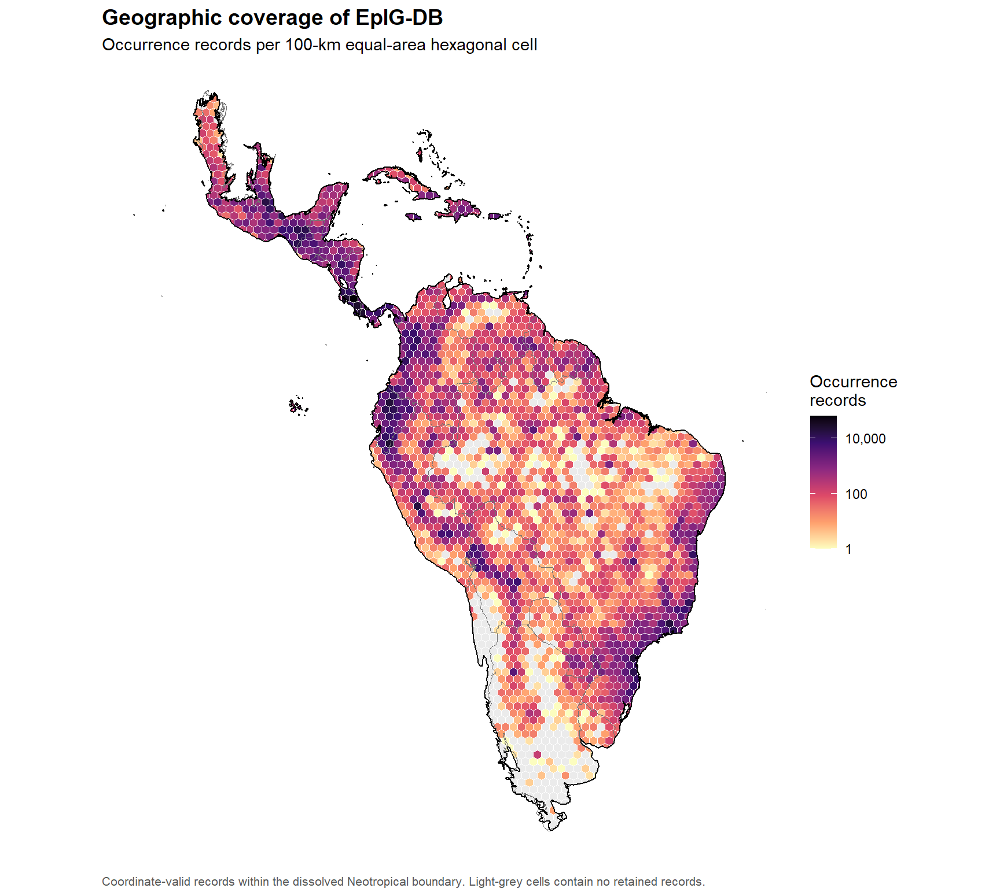

| Layer | Purpose | Features | Invalid geometries before repair | EPSG |
|---|---|---|---|---|
| Neotropical boundary | Analysis mask and outer boundary | 2 | 0 | 4,326 |
| Countries | Political reference boundaries | 58 | 1 | 4,326 |
| Biogeographic provinces | Morrone biogeographic units for subsequent maps | 60 | 0 | 4,326 |
Occurrence Maps
Proposed Design
- Aggregate records into an equal-area hexagonal grid rather than plot 1.37 million overlapping points.
- Use the dissolved Neotropical boundary as the mask and outline.
- Use a logarithmic color scale for record counts.
- Retain empty areas so sampling gaps remain visible.
- Report the number of coordinate-valid records used and records outside the Neotropical boundary.
- Avoid exposing individual occurrence coordinates in the rendered output.
Loading Data
The complete EpIG-DB 2.0 occurrence product is loaded locally. The raw database is employed only to prepare aggregate outputs and is not displayed in the HTML document.
Preparation Block
Three spatial inputs are prepared. the dissolved Neotropical boundary, country boundaries, and the Morrone biogeographic provinces. Invalid geometries are repaired before further spatial operations.
Table Table 1 documents the role, size, geometry status, and coordinate reference system of each spatial input. All three inputs use WGS84 (EPSG:4326).
Coordinate Screening
Longitude and latitude are converted to numeric values and evaluated sequentially. Records must have a complete coordinate pair, fall within the legal geographic ranges, and not represent the placeholder coordinate ‘(0, 0)’.
Table Table 2 shows how coordinate-valid subset was obtained. Exclusion categories are mutually exclusive within this sequence.
| Screening step | Records | Percentage of all records |
|---|---|---|
| All occurrence records | 1,372,136 | 100.0% |
| Excluded: incomplete or non-numeric coordinate pair | 1,715 | 0.1% |
| Excluded: coordinate outside legal range | 0 | 0.0% |
| Excluded: placeholder coordinate (0, 0) | 0 | 0.0% |
| Retained: coordinate-valid records | 1,370,421 | 99.9% |
Occurrence Records
Coordinate-valid records are projected to Equal Earth (EPSG:8857), filtered by the dissolved Neotropical boundary, and assigned to a 100-km equal-area hexagonal grid. Employing an equal-are projection makes the grid cells spatially comparable across the study region.
Table Table 3 reports the final map denominator and verifies that all records inside the study boundary were assigned to grid cells.
| Metric | Value |
|---|---|
| Coordinate-valid records | 1,370,421 |
| Records inside the Neotropical boundary | 1,369,441 |
| Records outside the Neotropical boundary | 980 |
| Records assigned to grid cells | 1,369,441 |
| Occupied grid cells | 2,136 |
| Empty grid cells | 353 |
| Cell-assignment check | Passed |
Geographic Coverage
Figure Figure 1 displays the number of records in each occupied cell. The logarithmic color transformation preserves differences across a highly differentiated count distribution. Light-grey cells represent sampled-area gaps with no retained occurrence records.

Interpretation
The map summarizes geographic sampling intensity rather than species richness or biological abundance. Cells with many records may reflect greater collection effort, data mobilization, or repeated sampling. Consequently, geographic differences in record density should not be interpreted directly as differences in epiphyte diversity.